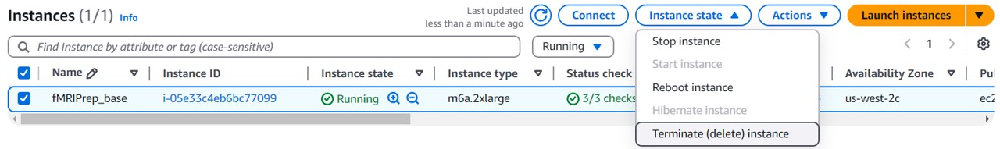
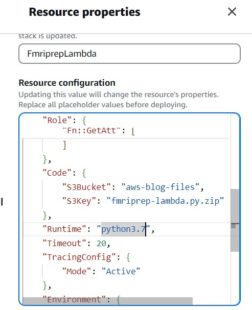

fMRIPrep-AWS
How to set up an up-to-date fMRIPrep pipeline on AWS
Prologue
Thanks to Mingwen Dong and Mengxue Kang for their 2019 AWS Open Blog post on running fMRIPrep on AWS: fMRI data preprocessing on AWS using fMRIprep.
This GitHub page builds upon their work, providing a step-by-step guide to setting up the latest fMRIPrep pipeline on AWS. Since the original AWS blog post was published, fMRIPrep has been updated to version 24.x (24.1.1 at the time of writing), incorporating many new features and improvements. Setting up the latest pipeline will allow you to use these enhancements in your analysis.
Walkthrough
The following section covers the procedures to set up an up-to-date FMRIPREP pipeline on AWS:
1. Create an EC2 instance
2. Create an Amazon Machine Image from the EC2 instance
3. Update the CloudFormation setting
4. Clean up and voilà
Steps
Create an EC2 instance
-
Enter "EC2" into the AWS search bar and launch EC2 service.
-
Click "Launch instances" as shown on the top right corner.
-
Enter a name for the EC2 instance; I am using "fMRIPrep_base" as the name here.
-
Select Ubuntu as the operating system for the EC2 instance.
-
Select an instance type for the EC2 instance. There are two factors that go into this decision: need and pricing. For fMRIPrep, the developers provide benchmarking data on the website. I typically allocate 32 GB of ram and 8 CPUs when running fMRIPrep. For this illustration, I picked m6a.2xlarge as the instance type.
-
Select a Key pair. If you didn't have one, click "Create new key pair".
-
Configure the storage volume for the EC2 instance. I am using 30 GB in the illustration, but it's possible to use less.
-
Launch the instance. You should see a message as shown below. Then, click "Connect to instance".
-
Click "Connect" at the bottom right corner.
-
Afer connecting to the instance, there are three packages to install: Docker, unzip, and AWS Command Line Interface. For ease, I've pasted the codes below. Copy the codes, and paste them into the instance, and then hit enter. When pasting, right click on the instance and select "paste".
sudo apt-get update
sudo apt-get install ca-certificates curl
sudo install -m 0755 -d /etc/apt/keyrings
sudo curl -fsSL https://download.docker.com/linux/ubuntu/gpg -o /etc/apt/keyrings/docker.asc
sudo chmod a+r /etc/apt/keyrings/docker.asc
echo \
"deb [arch=$(dpkg --print-architecture) signed-by=/etc/apt/keyrings/docker.asc] https://download.docker.com/linux/ubuntu \
$(. /etc/os-release && echo "$VERSION_CODENAME") stable" | \
sudo tee /etc/apt/sources.list.d/docker.list > /dev/null
sudo apt-get update
sudo apt-get install docker-ce docker-ce-cli containerd.io docker-buildx-plugin docker-compose-plugin
sudo apt install unzip
curl "https://awscli.amazonaws.com/awscli-exe-linux-x86_64.zip" -o "awscliv2.zip"
unzip awscliv2.zip
sudo ./aws/install
Wait for the installations to complete, and you should see the message as shown below.
Note: As you may notice, I did not include a step to install fMRIPrep directly into this EC2 instance, which will be used to create the Amazon Machine Image. This is because I generally prefer to call the Docker package in the docker run command, and when Docker can't find the package, it will download it. If you want to pre-install fMRIPrep here, please make sure to reference the correct version number in the docker run command in the Lambda function.
Create an Amazon Machine Image from the EC2 instance
-
Go back to the EC2 dashboard page. Select the EC2 instance. Open the "Action" tab. Go to "Image and templates". Then, click "Create image". This will create an Amazon Machine Image using the EC2 instance.
-
Go through the process and you should see a message as shown below.
-
The process of creating the Amazon Machine Image can take a bit of time. You can navigate to the AMIs page under the Images tab on the left sidebar. If the Status of the AMI says "Pending", that means the Image is still being created. The process will be completed when the Status changes to "available".
-
After creating the AMI, don't forget to terminate the EC2 instance! Otherwise you will continue to be charged for it!

Note: The AMI created from this illustration is kept. If you prefer not to create your own, you can use this AMI by referencing its ID: ami-0cb3e694642e383aa.
Update the CloudFormation setting
At the time of writing this post, Python runtime 3.7 no longer seems to work for the Lambda function. Therefore, in order to set up all of the resources to run fMRIPrep on AWS as illustrated in the original AWS blog post, you need to either modify the Lambda function setting in Infrastructure Composer or modify the json file that the AWS blog post used.
For ease, I've modified the json file and uploaded to this GitHub page, as well as an S3 bucket. You can either download the json file, create the stack in CloudFormation by uploading the json file, or create the stack by retrieving the json file from the S3 bucket. If the hyperlink above doesn't work, you can copy the S3 link https://smallstorage62.s3.us-west-2.amazonaws.com/fmriprep-cf.json and paste it into the Amazon S3 URL field when you create the stack, and click Next.
Here I will explain how to modify the Lambda function setting:
-
After pasting the S3 URL into the Amazon S3 URL field in CloudFormation or uploading the template json file, click "View in Infrastructure Composer".

-
Locate the FmriprepLambda component, and click "Details".
-
A window should appear on the right. In the window, you can change the version of the Python runtime, and environmental variables such as (a) the Amazon Machine Image that the fMRIPrep pipeline will use, (b) the EC2 instance type that the pipeline will use to perform the analysis, (c) the unique user ID, (d) the name of the freesurfer license, and (e) the name of the folder in the input S3 bucket that will contain the BIDS neuroimaging data.

-
After you finish editing the Lambda function settings, save them and proceed.
Clean up and voilà
Once you finish creating the stack using CloudFormation, you will have mostly everything you need to run the latest version of fMRIPrep on AWS! But since fMRIPrep has now moved to nipreps, you will need to modify the Lambda function to correctly call the Docker package.
-
Locate the line that starts with "docker run" in fmriprep-lambda.py. Change
poldracklab/fmriprep:latesttonipreps/fmriprep:latest, or tonipreps/fmriprep:<version>. -
Click "Deploy" on the left side bar, or press Ctrl+Shift+U.
-
Upload your freesurfer license to the freesurfer license S3 bucket, and your BIDS-formatted neuroimaging data to the bids folder in the input S3 Bucket. And now you are in business! Click the "Test" button on the Lambda function page or press Ctrl+Shift+I, and fMRIPrep will start running.
Epilogue
- This is essential a guide on how to build an Amazon Machine Image with Docker and AWS preloaded, such that when the Lambda function is executed, the Docker image of your choice can be downloaded and run. The steps outlined on this GitHub page can also be generalized to set up other Docker packages, such as XCP-D (for resting-state denoising), qsiprep/qsirecon (for structural preprocessing and reconstruction), and fmripost-aroma (for ICA-AROMA denoising if using fMRIPrep version 23.1.0 or later). Also, it is possible to create a single Amazon Machine Image with one or multiple packages pre-loaded; you will just need to make sure the Lambda function is calling the correct versions of the packages that you installed on the AMI.
- I am neither a computer scientist nor an AWS expert. However, I once found myself struggling to figure out how to run analyze fMRI data for my research without access to local high-performance computing. My hope in writing this guide is that it might help someone who is facing a similar challenge some day. If you have any suggestions, please share!
- If you find this page helpful, I will humbly accept your donation in the form of a star on the GitHub page. ;)
- A Zen-dog picture for the road.